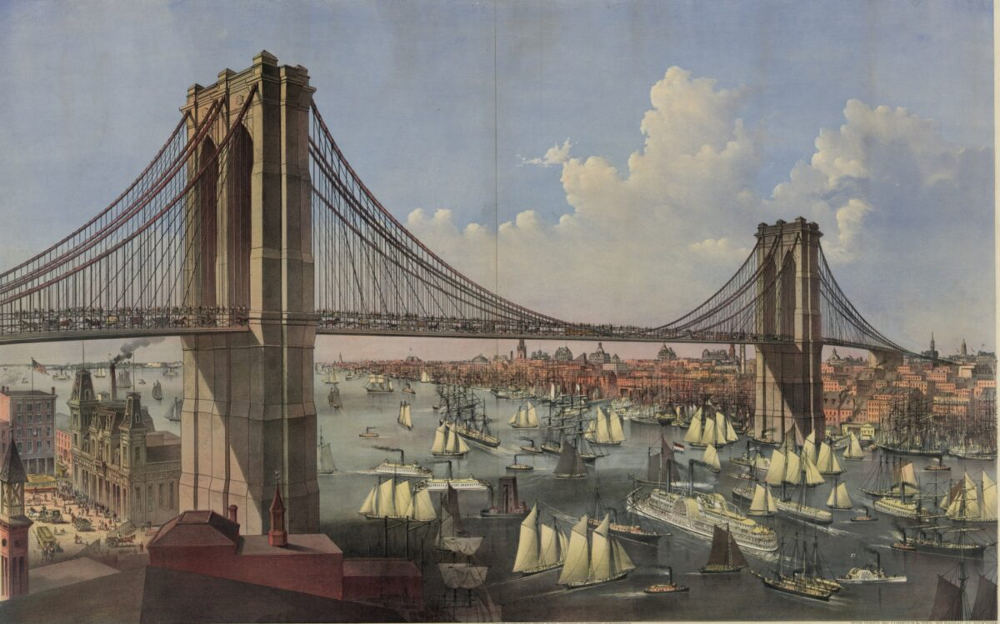

Human Stories
The history of the Brooklyn Bridge is intertwined with the stories of the people who built it. John A. Roebling, the bridge's original designer, died before construction began, and his son, Washington Roebling, took over, later suffering debilitating illness due to decompression sickness. Emily Roebling, Washington's wife, played a crucial role in overseeing the project's completion. The sacrifices and contributions of the Roebling family and the workers who built the bridge underscore the human element in the creation of this historic structure.